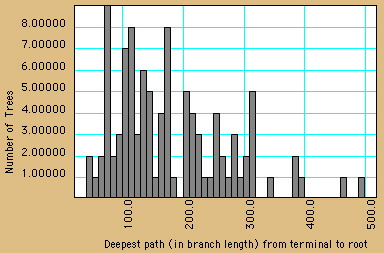

|
|||||||||||||||
|
|
|
(updated August 2005)

MesquiteChart is a subclass of Panel used to contain information about data points and to draw charts such as histograms and scatter plots. Charts have drawn by special Charter objects which supervise the drawing. This allows the chart to be created and owned by one module (for instance, the one controlling the window) but the contents are drawn by the charter supplied by another module.
A MesquiteChart has NumberArrays to store X, Y and Z values for each of a number of points. This is the fundamental information to be conveyed by the chart. In addition, a category and a color can be associated with each point. It's up to the Charter to decide how to portray the information. Thus, a histogram charter might treat a X as the value, Y its frequency. A scattergram charter could plot X vs. Y and color the points by Z (assuming there isn't an explicitly associated color).
A module using a MesquiteChart will instantiate a chart, passing it a Charter object in its constructor (or via its setCharter method). When it's time to fill the chart with information, the chart's deassignChart() method is called to wipe it clean, then points are added using addPoint or addSumPoint. Once all points are added, the munch() method of the chart is called to ask it to process the information. The munch method, once done, asks for a repaint of the chart.
MesquiteCharts and their use are still too messy and complex, but their use can be seen by example (e.g., see ItemValuesChart or ItemsBiplot modules).